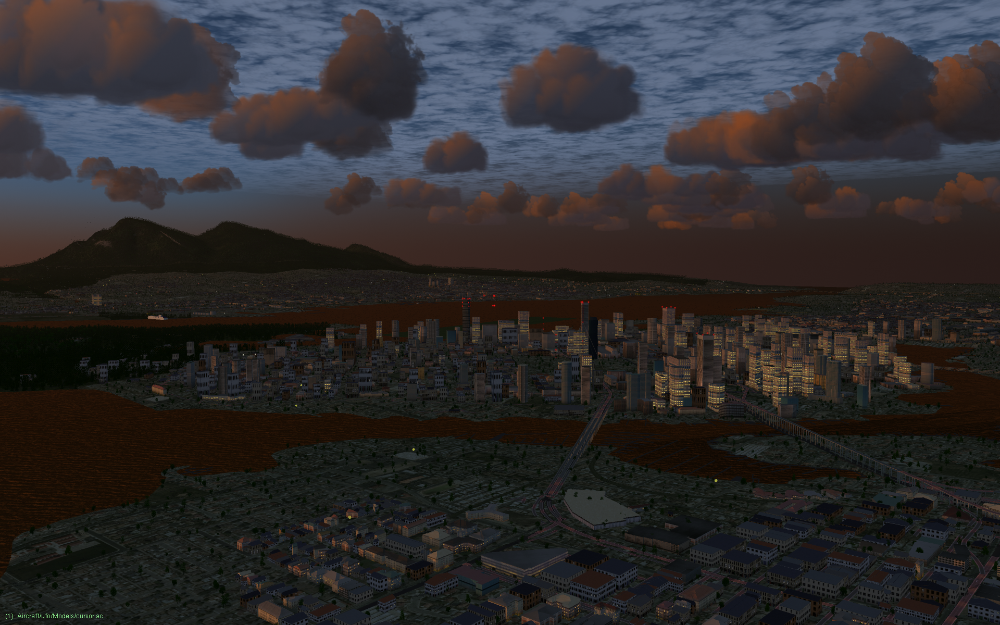

Vancouver, BC (w130n40)
Downtown Vancouver, BC at dusk, looking from the south. Kitsilano is in the foreground and Stanley Park is on the left. Take off from from Vancouver International Airport (CYVR).
Miami Beach, FL (w090n20)
Miami Beach on a hazy afternoon. Take off from from Miami International Airport (KMIA).

Osbourn, Antigua (w070n10)
Caribbean flying in Antigua and Barbuda. Take off from VC Bird International Airport (TAPA).
{kind=link}
Jasper, AB (w120n50)
Rocky Mountains near Jasper, AB. Take off from from Jasper Airport (CYJA).

Boise, ID (w120n40)
Over Boise with mountains in the distance. Take off from from Boise Air Terminal/Gowan Field (KBOI).

Godrich, ON (w090n40)
Flying towards a frozen-over Georgian Bay on Lake Huron. Take off from from Godrich Airport (CYGD).

Columbia River (w130n40)
Along the Columbia River, towards Portland OR on the left and Vancouver WA on the right. Take off from Portland Troutdale Airport (KTTD).

Gateway Arch, St. Louis (w100n30)
We need proper bridge models here, but the famous Gateway Arch in St Louis, MO is easy to find. Take off from Spirit of St Louis Airport (KSUS).

Kingston, ON (w080n40)
The Canadian Shield north of Kingston, ON. The many small lakes and wetlands bring the scenery to life. Take off from from Kingston Norman Rogers Airport (CYGK).

Grand Canyon (w120n30)
The Colorado River at the bottom of the Grand Canyon. Take off from Grand Canyon National Park Airport (KGCN).
Fjord in Umingmak Nuna (w090n80)
A fjord in Umingmak Nuna (ᐅᒥᖕᒪᒃ ᓄᓇ, Ellesmere Island) in Canada's High Arctic. There is no nearby airport. This screenshow was captured at 82N, 85W.

Alaskan wilderness (w160n50)
Looking south over Seldovia Bay, off Cook Inlet. Take off from Seldovia Airport (PASO).